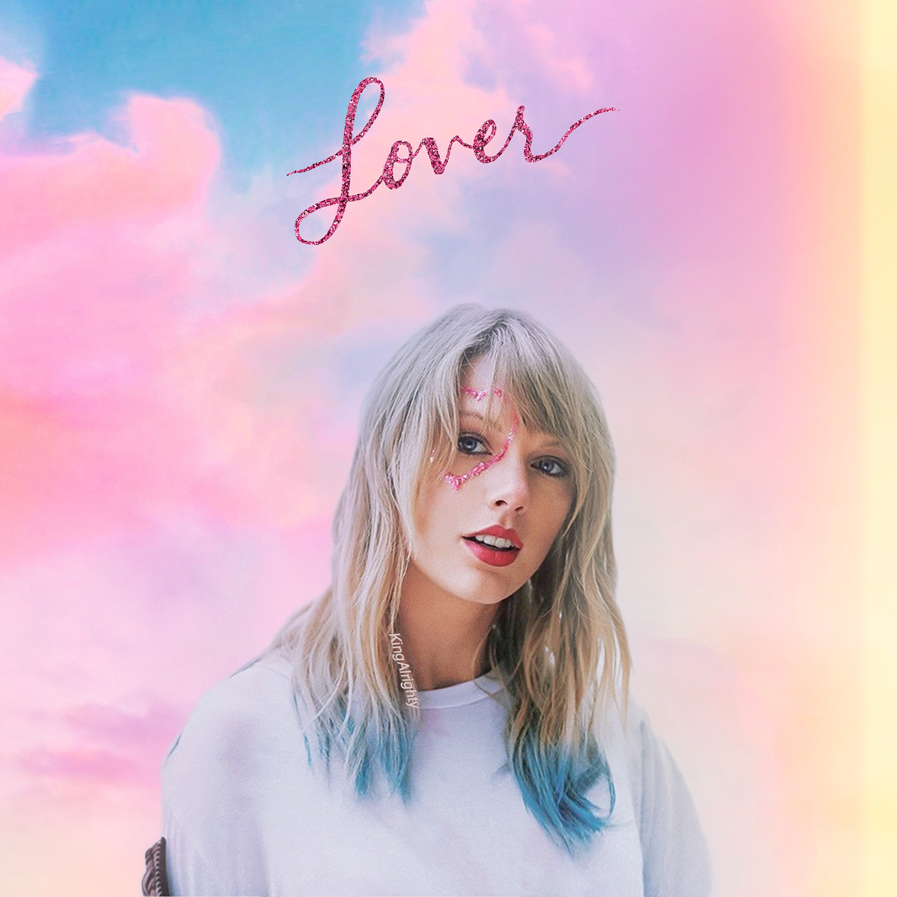

Lover
Taylor Swift

 Lover is the seventh studio album by American singer-songwriter Taylor Swift. It was released on August 23, 2019, by Republic Records. As the executive producer, Swift worked with producers Jack Antonoff, Joel Little, Louis Bell, Frank Dukes, and Sounwaveon the album. Described by Swift as a "love letter to love itself", the album celebrates the ups and downs of love and incorporates brighter, more cheerful tones, departing from the dark sounds of its predecessor, Reputation (2017). Musically, it is a pop, pop rock, electropop and synth-pop record that contains influences of country, dream pop, bubblegum pop, funk, pop punk, R&B, and indie pop.
Lover is the seventh studio album by American singer-songwriter Taylor Swift. It was released on August 23, 2019, by Republic Records. As the executive producer, Swift worked with producers Jack Antonoff, Joel Little, Louis Bell, Frank Dukes, and Sounwaveon the album. Described by Swift as a "love letter to love itself", the album celebrates the ups and downs of love and incorporates brighter, more cheerful tones, departing from the dark sounds of its predecessor, Reputation (2017). Musically, it is a pop, pop rock, electropop and synth-pop record that contains influences of country, dream pop, bubblegum pop, funk, pop punk, R&B, and indie pop.
- I forgot that you existed
- Cruel summer
- Lover
- The man
- The archer
- I think he knows
- Miss american & the heartbreak prince
- Paper kings
- Cornelia street
- Death by a thousand cuts
- London boy
- Soon you’ll get bette
- Monks
- False god
- You need to calm down
- Afterglow
- ME!
- it's nice to have a friend
- daylight